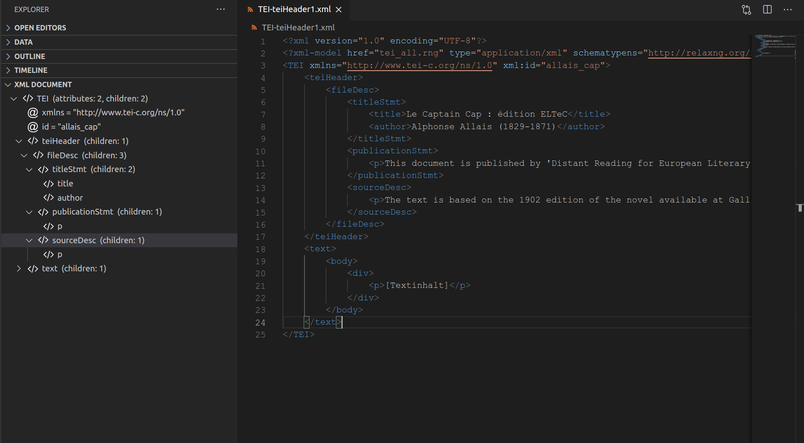
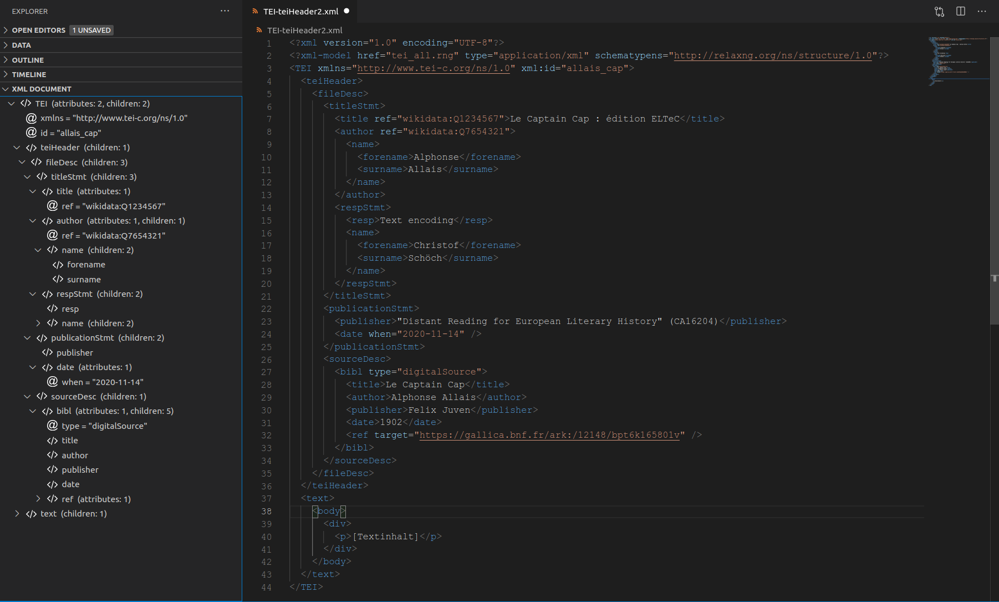
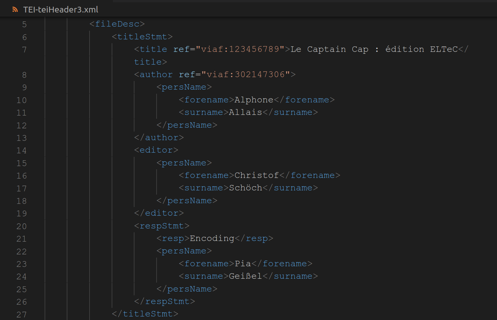
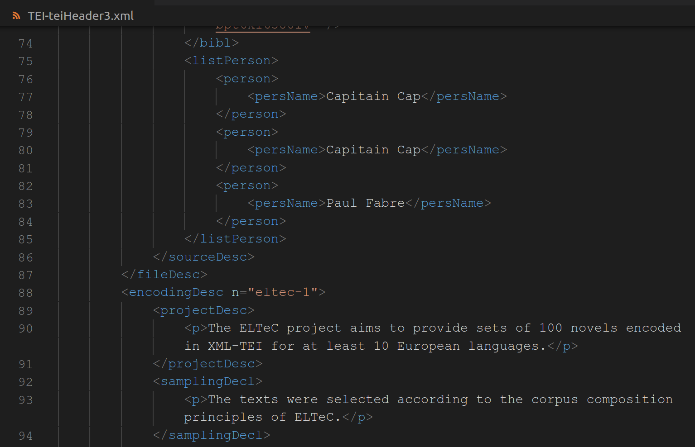
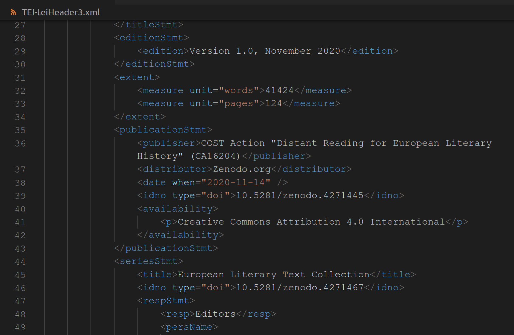
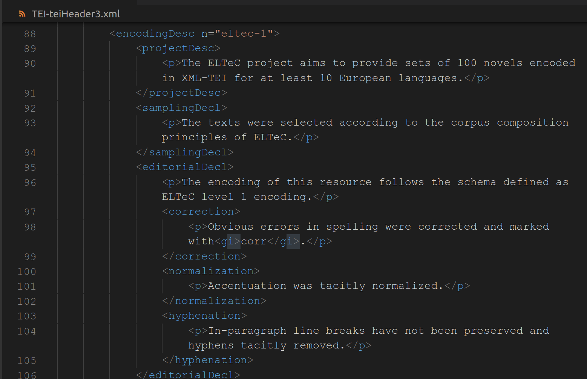
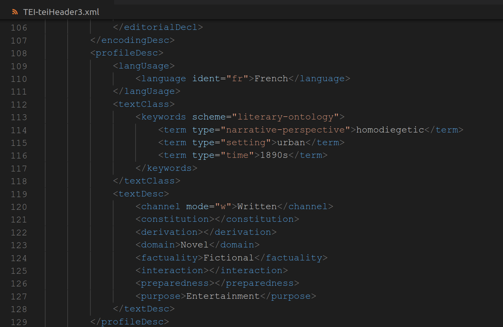
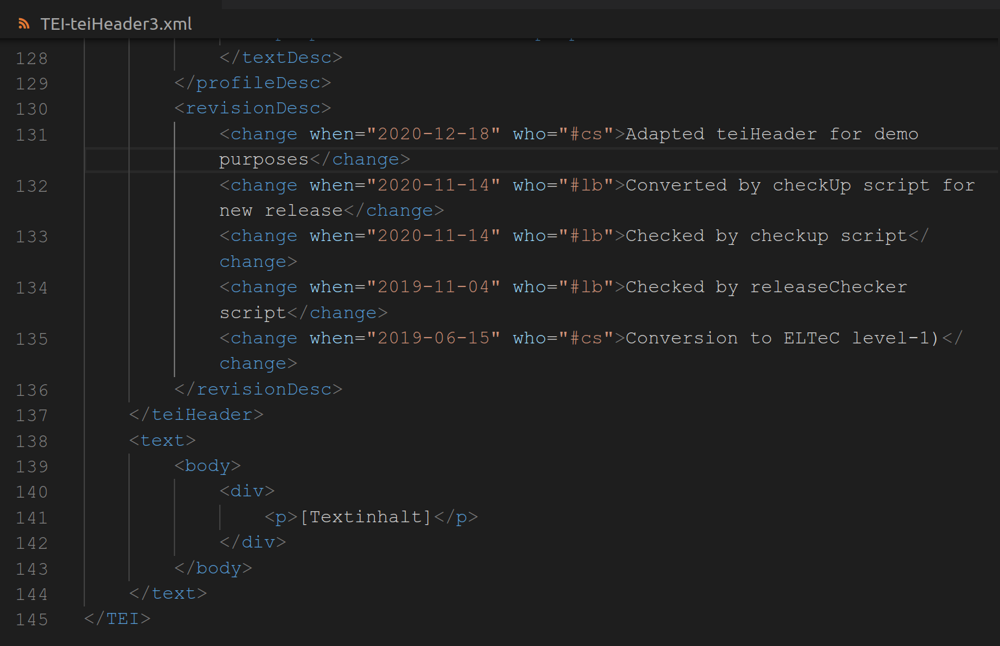

# TEI: Der teiHeader <br/> <hr/> <br/>Prof. Dr. Christof Schöch <br/> <br/> <hr/> <p><strong>Modul Auszeichnungssprachen<br/>MSc. Digital Humanities, Universität Trier</strong></p> <hr/> <img height="60" data-src="img/basics/uni-trier.png"> -- ## Überblick 1. Erinnerung: Der minimale teiHeader 2. Erweiterungen des teiHeaders -- ## (1) Erinnerung: Der minimale teiHeader --- ### Der teiHeader * Neben `<text>` der zweite, zentrale Teil des TEI-Dokuments * Zentrale Funktion: dokumentbezogene Metadaten festhalten * Aber: Nicht zu verwechseln mit der Kodierung der Titelseite (!) * Dokumentation: https://tei-c.org/release/doc/tei-p5-doc/en/html/HD.html --- ### Purposes of the teiHeader >This chapter addresses the problems of describing an encoded work so that the text itself, its source, its encoding, and its revisions are all thoroughly documented. Such documentation is equally necessary for scholars using the texts, for software processing them, and for cataloguers in libraries and archives. Together these descriptions and declarations provide an electronic analogue to the title page attached to a printed work. They also constitute an equivalent for the content of the code books or introductory manuals customarily accompanying electronic data sets. ("The TEI Header") --- ### Komponenten des teiHeaders * `<fileDesc>`: verpflichtend; enthält die wesentlichen Metadaten zum Dokument selbst * `<encodingDesc>`: dokumentiert die Prinzipien der Textkodierung * `<profileDesc>`: enthält Informationen, die den Text beschreiben und kontextualisieren * `<revisionDesc>`: dokumentiert die Versionsgeschichte des Dokuments * `<xenoData>`: Metadaten, die in einem anderen Format als TEI vorgehalten werden --- ### Obligatorische Teile der <fileDesc> * `<titleStmt>` * Informationen zum Titel * `<title>` Titel des digitalen Dokuments (nicht der Quelle) * `<publicationStmt>` * Aussage zum Status des Dokuments bzgl. Publikation * Mindestens ein unstruktuierter Absatz `<p>` * `<sourceDesc>` * Beschreibung der Quelle, die dem digitalen Dokument zugrunde liegt * Mindestens ein unstruktuierter Absatz `<p>` --- ### Ein minimaler teiHeader (1) <a href="img/E09/TEI-teiHeader1.png"></a> https://github.com/dh-trier/markup/blob/main/data/TEI-teiHeader1.xml --- ### Ein minimaler teiHeader (2) <a href="img/E09/TEI-teiHeader2.png"></a> https://github.com/dh-trier/markup/blob/main/data/TEI-teiHeader2.xml -- ## (2) Erweiterungen der `<fileDesc>` --- ### Erweitertes `<titleStmt>` * Standard-Rollen * `<author>` - Autor des kodierten Texts oder des „born digital“ Dokuments * `<editor>` - Herausgeber des kodierten Texts * `<principal>` - wichtigster beteiligter Forscher, Projektleiter * Für spezifischere Rollen * `<respStmt>` mit `<resp>` und `<name>` * `<resp>` - frei definierbare Aufgabe, bspw. „Transkription und Kodierung“ --- ### Beispiel `<titleStmt>` <a href="img/E09/TEI-teiHeader-full2.png"></a> https://github.com/dh-trier/markup/blob/main/data/TEI-teiHeader3.xml --- ### Erweiterte `<sourceDesc>` * Drei Ansätze * Unstrukturiert: freie Prosa in einem `<p>` * Leicht strukturiert: Prosa mit einzelnen bibliographischen Elementen: `<author>`, `<publisher>` in `<bibl>` * Stark strukturiert mit `<biblStruct>` : nur spezielle Elemente * Außerdem spezielle Elemente * für gesprochene Sprache: `<recordingStmt>` * für Manuskripte: `<msDesc>` * Referenz-Listen: `<listPerson>`, `<listPlace>`, `<listOrg>` --- ### Beispiel `<sourceDesc>` <a href="img/E09/TEI-teiHeader-full6.png"></a> https://github.com/dh-trier/markup/blob/main/data/TEI-teiHeader3.xml --- ### Optionale Komponenten der `<fileDesc>` * `<editionStmt>` – Auch digitale Editionen können mehr als eine Auflage/Version haben * `<seriesStmt>` - Auch sie können in Reihen publiziert werden * `<extent>` - Angabe des Umfangs der Edition, in einem geeigneten Maß (`@unit`: kb, GB, Wörter, Seiten) * `<notesStmt>` - Anmerkungen zu Aspekten, die anderswo nicht abgedeckt sind --- ### Beispiel `<fileDesc>` <a href="img/E09/TEI-teiHeader-full3.png"></a> https://github.com/dh-trier/markup/blob/main/data/TEI-teiHeader3.xml -- ## (3) Die `<encodingDesc>` --- ### `<encodingDesc>` * Enthält Informationen zum Kodierungs-Vorgang * Als Prosa in einem `<p>` * Oder mit speziellen Elementen, u.a. * `<projectDesc>` : Ziele des Projekts * `<samplingDecl>` : Prinzipien der Auswahl der Texte * `<editorialDecl>` : Editionsprinzipien, bspw. `<normalization>` oder `<hyphenation>`. --- ### Beispiel `<encodingDesc>` <a href="img/E09/TEI-teiHeader-full8.png"></a> https://github.com/dh-trier/markup/blob/main/data/TEI-teiHeader3.xml -- ## (4) Die `<profileDesc>` --- ### Wesentliche Elemente * `<creation>` - Informationen über den Ursprung des Texts, bspw. Zeit und Ort * `<langUsage>` - Informationen über die Sprachen, Register, Schriftsysteme, im Text * `<textDesc>` und `<textClass>` - Mechanismen zur Klassifikation des Textes oder der Texte * `<handNotes>` – Informationen über die Schriften ("hands") in einem Manuskript --- ### Beispiel `<profileDesc>` <a href="img/E09/TEI-teiHeader-full9.png"></a> https://github.com/dh-trier/markup/blob/main/data/TEI-teiHeader3.xml -- ## (5) Die `<revisionDesc>` --- ### Wesentliche Elemente * Zur Dokumentation von Überarbeitungen des TEI-Dokuments * neuester Eintrag ganz oben * Struktur * Liste von `<change>` Elementen * Attribute: @date und @who * Vorsicht * `<change>` hier: bezieht sich auf das TEI-Dokument * `<change>` in `//sourceDesc/creation` bezieht sich auf die kodierte Quelle --- ### Beispiel `<revisionDesc>` <a href="img/E09/TEI-teiHeader-full7.png"></a> https://github.com/dh-trier/markup/blob/main/data/TEI-teiHeader3.xml -- ## Abschluss --- ### Lektürehinweise Referenzlektüre * "The TEI Header", in: *Guidelines of the Text Encoding Initiative*, P5, Version 4.1.0, 2020. https://tei-c.org/release/doc/tei-p5-doc/en/html/HD.html --- ### Danke! <br/><br/> <br/><br/> <br/><br/> <hr/> <small> <br/>Lizenz: <a href="https://creativecommons.org/licenses/by/4.0/">Creative Commons Attribution (CC BY)</a>, 2020. </small> <hr/>